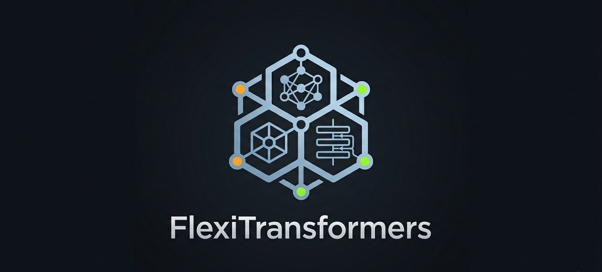

FlexiTransformers Documentation

A modular transformer framework supporting encoder-decoder, encoder-only (BERT), and decoder-only (GPT) architectures with a pluggable positional encoding system.
graph TD
A[FlexiTransformers] --> B[Architectures]
A --> C[Components]
A --> D[Training]
B --> B1[Encoder-Decoder]
B --> B2[Encoder-Only]
B --> B3[Decoder-Only]
C --> C1[MultiHeadAttention]
C --> C2[Positional Encodings]
C --> C3[Layers & Blocks]
C2 --> C2a[Sinusoidal / Learned]
C2 --> C2b[Rotary - RoPE]
C2 --> C2c[ALiBi]
C2 --> C2d[Relative / Relative+Bias]
D --> D1[Trainer]
D --> D2[Callbacks]
D --> D3[Loss Functions]
Features
3 architectures — Encoder-Decoder, Encoder-Only (BERT), Decoder-Only (GPT)
6 positional encodings — Sinusoidal, Learned, RoPE, ALiBi, Relative, Relative+Bias
Pluggable PE system —
register_pe("name", MyPE)to add custom encodingsKV cache — efficient autoregressive inference with per-layer caching
Sampling strategies — greedy, temperature, top-k, nucleus (top-p)
Training utilities —
Trainer, callbacks,LabelSmoothing,run_epochFully typed — mypy-checked, ruff-formatted, pre-commit enforced
Installation
pip install flexitransformers
Quick Start
Decoder-Only (GPT-style)
from flexit import FlexiGPT, greedy_decode
import torch
model = FlexiGPT(vocab_size=32000, d_model=512, n_heads=8, n_layers=6, d_ff=2048)
src = torch.randint(0, 32000, (1, 10))
out = greedy_decode(model, src, src_mask=None, max_len=50, start_symbol=1)
print(out.shape) # [1, 59]
Encoder-Only (BERT-style)
from flexit import FlexiBERT
import torch
model = FlexiBERT(vocab_size=32000, d_model=512, n_heads=8, n_layers=6,
d_ff=2048, num_classes=2)
x = torch.randint(0, 32000, (4, 64))
mask = (x != 0).unsqueeze(1).unsqueeze(2)
logits = model(x, mask)
print(logits.shape) # [4, 2]
Advanced Config (Encoder-Decoder)
from flexit import ModelConfig, create_model
config = ModelConfig(
model_type='encoder-decoder',
src_vocab_size=32000,
tgt_vocab_size=32000,
d_model=512,
n_heads=8,
n_layers=6,
d_ff=2048,
pe_type='rotary',
dropout=0.1,
)
model = create_model(config)
flowchart LR
A[ModelConfig] --> B[TransformerFactory]
B --> C{model_type}
C -->|encoder-decoder| D[EncoderDecoderModel]
C -->|encoder-only| E[EncoderOnlyModel]
C -->|decoder-only| F[DecoderOnlyModel]
D --> G[FlexiTransformer]
E --> H[FlexiBERT]
F --> I[FlexiGPT]
Positional Encodings
Name |
|
Injected at |
Representative models |
|---|---|---|---|
Sinusoidal |
|
Embedding |
Vaswani et al. 2017 |
Learned |
|
Embedding |
BERT, GPT-2 |
Rotary (RoPE) |
|
Q/K projections |
LLaMA, GPT-NeoX |
ALiBi |
|
Attention scores |
MPT, BLOOM |
Relative |
|
Attention scores |
Transformer-XL |
Relative+Bias |
|
Attention scores |
T5 |
None |
|
— |
Ablations |
Custom PE via plugin:
from flexit import register_pe
from flexit.attention.positional import PositionalEncoding
class NoPE(PositionalEncoding):
@property
def injection_point(self):
return "embedding"
def apply_to_embedding(self, x):
return x
register_pe("nope", NoPE)
Inference Strategies
Greedy decoding and nucleus sampling are both available out of the box:
from flexit import greedy_decode, sample_decode, temperature_sample, top_k_sample, top_p_sample
# Greedy
out = greedy_decode(model, src, src_mask=None, max_len=50, start_symbol=1)
# Nucleus (top-p) + temperature
out = sample_decode(model, src, src_mask=None, max_len=50, start_symbol=1,
temperature=0.8, top_p=0.9)
# Standalone logit samplers
token = temperature_sample(logits, temperature=0.7)
token = top_k_sample(logits, k=50, temperature=1.0)
token = top_p_sample(logits, p=0.9, temperature=0.8)
Core Architecture
stateDiagram-v2
[*] --> EmbeddingWithPE
EmbeddingWithPE --> TransformerLayers
state TransformerLayers {
[*] --> EncoderStack
EncoderStack --> [*]: Encoder-Only
EncoderStack --> DecoderStack: Encoder-Decoder
[*] --> DecoderStack: Decoder-Only
DecoderStack --> [*]
}
TransformerLayers --> OutputHead
OutputHead --> [*]
Three fundamental building blocks:
Embedding System —
EmbeddingWithPEcombines token embeddings with the chosen positional encoding (or passes through for QK/score-level encodings).Transformer Layers —
EncoderLayer,CausalDecoderLayer,CrossAttentionDecoderLayer— each wrapsMultiHeadAttention+FeedForwardinsideSublayerConnection(residual + norm, pre- or post-norm).Output Heads —
LMHead(language modeling, weight tying),BertHead,SequenceClassificationHead,TokenClassificationHead.
Training Pipeline
from flexit import (
ModelConfig, create_model,
Trainer, LossCompute, LabelSmoothing,
CheckpointCallback, EarlyStoppingCallback,
)
import torch
config = ModelConfig(model_type='decoder-only', vocab_size=32000,
d_model=512, n_heads=8, n_layers=6, d_ff=2048)
model = create_model(config)
criterion = LabelSmoothing(size=32000, padding_idx=0, smoothing=0.1)
loss_fn = LossCompute(generator=model.generator, criterion=criterion, model=model)
trainer = Trainer(
model=model,
optimizer=torch.optim.Adam(model.parameters(), lr=3e-4),
loss_fn=loss_fn,
train_dataloader=train_loader,
val_dataloader=val_loader,
callbacks=[
CheckpointCallback(save_dir="ckpts/", monitor="val_loss"),
EarlyStoppingCallback(patience=3, monitor="val_loss"),
],
)
metrics = trainer.fit(epochs=10)
Package Structure
Subpackage |
Key components |
|---|---|
|
|
|
|
|
|
|
|
|
|
|
|
|
|
|
|
|
|
|
|
|
|
|
|
API Reference
Package Modules
Examples
See the examples/ directory for end-to-end runnable scripts covering all architectures, PE types, output heads, save/load, and custom plugins.
Contributing
Fork the repository
Create a feature branch:
git checkout -b feature/your-featureFollow existing code style (ruff, mypy, type annotations)
Write tests for new functionality
Submit a pull request with a clear description
License
MIT License — see license text.
Acknowledgments
“Attention Is All You Need” — Vaswani et al. (2017)
Hugging Face Transformers for architectural inspiration
PyTorch community for foundational components